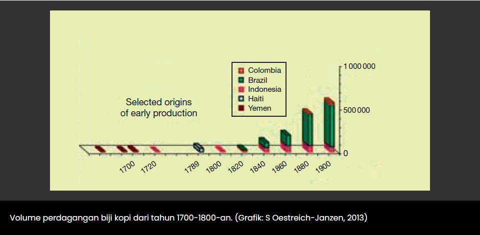
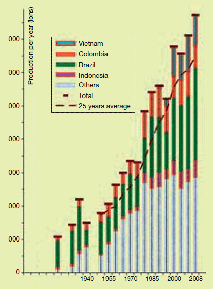

~Al Pacino~
Sejarah kopi di Indonesia dimulai pada tahun 1696 ketika Belanda membawa kopi dari Malabar, India, ke Jawa. Mereka membudidayakan tanaman kopi tersebut di Kedawung, sebuah perkebunan yang terletak dekat Batavia. Namun upaya ini gagal kerena tanaman tersebut rusak oleh gempa bumi dan banjir. Upaya kedua dilakukan pada tahun 1699 dengan mendatangkan stek pohon kopi dari Malabar. Pada tahun 1706 sampel kopi yang dihasilkan dari tanaman di Jawa dikirim ke negeri Belanda untuk diteliti di Kebun Raya Amsterdam. Hasilnya sukses besar, kopi yang dihasilkan memiliki kualitas yang sangat baik. Selanjutnya tanaman kopi ini dijadikan bibit bagi seluruh perkebunan yang dikembangkan di Indonesia. Belanda pun memperluas areal budidaya kopi ke Sumatera, Sulawesi, Bali, Timor dan pulau-pulau lainnya di Indonesia. Pada tahun 1878 terjadi tragedi yang memilukan. Hampir seluruh perkebunan kopi yang ada di Indonesia terutama di dataran rendah rusak terserang penyakit karat daun atau Hemileia vastatrix (HV). Kala itu semua tanaman kopi yang ada di Indonesia merupakan jenis Arabika (Coffea arabica). Untuk menanggulanginya, Belanda mendatangkan spesies kopi liberika (Coffea liberica) yang diperkirakan lebih tahan terhadap penyakit karat daun. Sampai beberapa tahun lamanya, kopi liberika menggantikan kopi arabika di perkebunan dataran rendah. Di pasar Eropa kopi liberika saat itu dihargai sama dengan arabika. Namun rupanya tanaman kopi liberika juga mengalami hal yang sama, rusak terserang karat daun. Kemudian pada tahun 1907 Belanda mendatangkan spesies lain yakni kopi robusta (Coffea canephora). Usaha kali ini berhasil, hingga saat ini perkebunan-perkebunan kopi robusta yang ada di dataran rendah bisa bertahan. Pasca kemerdekaan Indonesia tahun 1945, seluruh perkebunan kopi Belanda yang ada di Indonesia di nasionalisasi. Sejak itu Belanda tidak lagi menjadi pemasok kopi dunia.
Dokumen tertulis yang paling tua tentang kopi ditemukan dalam catatan Al Razi (850-922) seorang ilmuwan muslim yang juga ahli kedokteran. Dia menyebut suatu minuman yang ciri-cirinya mirip kopi dengan sebutan bunshum. Catatan ini diperkuat oleh seorang ahli kedokteran setelahnya, Ibnu Sina (980-1037 ), yang menggambarkan sesuatu biji yang bisa diseduh dan berkhasiat menyembuhkan salah satu penyakit perut. Semua keterangan yang diberikan Ibnu Sina merujuk pada ciri-ciri kopi yang kita kenal saat ini. Dia menyebut minuman tersebut bunshum dan bijinya dengan nama bun. Kopi menjadi komoditas ekonomi penting di dunia islam. Minuman kopi sangat populer di kalangan para peziarah di kota Mekah, meskipun pernah beberapa kali dinyatakan sebagai minuman terlarang. Para peziarah meminum kopi untuk tetap terjaga ketika beribadah di malam hari. Popularitas kopi semakin meluas di masa kekhalifahan Turki Ustmani. Di ceritakan minuman kopi menjadi sajian utama di setiap perayaan di Istambul. Di masa ini juga kopi mulai disukai orang-orang Eropa. Di awal tahun 1600-an para pedagang di Venesia membeli kopi dari pelabuhan Mocha di Yaman. Dari tempat ini menyebar ke daerah Eropa lainnya. Kemudian pada tahun 1668 kopi mulai menyeberang samudera Atlantik dan tiba di New York, kala itu masih menjadi kooni Belanda.
Berdasarkan catatan International Coffee Organization (ICO), terdapat 4 jenis kopi yang diperdagangkan secara global yakni kopi arabika, kopi robusta, kopi liberika dan kopi excelsa.7 Keempat jenis kopi tersebut berasal dari 3 spesies tanaman kopi. Arabica dihasilkan oleh tanaman Coffea arabica. Robusta dihasilkan tanaman Coffea canephora. Sedangkan liberika dan excelsa dihasilkan oleh tanaman Coffea liberica, persisnya Coffea liberica var. Liberica untuk kopi liberika dan Coffea liberica var. Dewevrei untuk kopi excelsa.
Di masa awal kopi hanya dikenal di masyarakat islam di jazirah Arab. Di awal abad ke-17 kopi mulai diperdagangkan ke luar Arab lewat pelabuhan Mocha di Yaman. Para pedagang Arab memonopoli komoditas ini untuk jangka waktu yang lama. Menginjak abad ke-18, bangsa Eropa mulai memproduksi kopi di luar Arab. Hingga pada tahun 1720 Belanda menggeser Yaman sebagai eksportir kopi dunia. Produk Belanda didapatkan dari perkebunan-perkebunan kopi di Jawa dan pulau-pulau sekitarnya, saat ini menjadi wilayah Indonesia. Indonesia menjadi produsen kopi terbesar dunia hampir satu abad lamanya. Pada tahun 1830 posisi Indonesia sebagai produsen kopi terbesar digeser Brasil. Hingga saat Brasil tercatat sebagai penghasil kopi terbesar dunia.
Dewasa ini kopi ditanam di lebih dari 50 negara di dunia. Brasil, Vietnam, Kolombia, Indonesia dan Etiopia merupakan negara-negara penghasil kopi paling terbesar. Brasil merupakan penghasil kopi paling dominan. Jumlah produksi kopi kopi berhasil sekitar sepertiga dari total produksi kopi dunia. Pada tahun 2015 Brasil menghasilkan sekitar 2,5 juta ton biji kopi. Produksi kopi di Brasil didominasi oleh jenis arabika sekitar 80%, sisanya robusta. Kopi arabika dinilai lebih baik dan dihargai lebih tinggi dibanding jenis kopi lainnya. Sementara itu, pada tahun 2015 Indonesia menempati posisi ke-empat negara penghasil kopi. Menurut Gabungan Eksportir Kopi Indonesia (GAEKI), sekitar 83% produksi kopi Indonesia dari jenis robusta dan 17% arabika.8 Indonesia juga menghasilkan kopi jenis liberika dan excelsa namun jumlahnya tidak signifikan bila dibandingkan arabika dan robusta.
